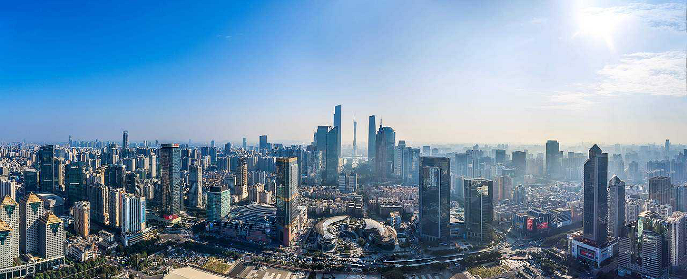

- 

Guangzhou , a prosperous metropolis full of vigor, is the capital city of Guangdong Province located along the south coastline of China. Being an excellent port on the Pearl River navigable to the South China Sea, and with fast accessibility to Hong Kong and Macau, the city serves as the political, economic, scientific, educational and cultural center in Guangdong area. Being the first cities benefited from the Reform and Opening Up policy since 1978, the city acts as the pioneer of the economic development of the country, with numerous enterprises, which offer many job opportunities and make the city a heavily populated area. Guangzhou is especially prosperous in commerce, tourism, dining, finance and real estate. For travelers, the city shows much attraction through its famous sights such as the Five Ram Statue in Yuexiu Park and Pearl River .
Guangzhou is one of the twenty-four famous historical and cultural cities in China. It does not, however, have the amount of cultural attractions found in some cities such as Beijing and Xi'an. Here is a brief list of Top Attractions to do in the city.

Guangzhou is considered as the paradise for gourmands in south China. Its dish represents well the Cantonese Cuisine, which is one among the most famous eight Chinese cuisines. A large amount of time-honored restaurants and quality new restaurants serve various authentic local dishes, snacks and drinks. The most popular restaurants gather around the old city area, including the Dongshan District, Yuexiu District and Liwan District. Panfu Road, West Jiangnan Road and East Huifu Road are recommended food streets for tourists to feel the local eating customs such as Yam Cha (Drinking Tea), having various kinds of soup or delicious Sampan Porridge.


With the fame of the shoppers' heaven with ton of quality goods at affordable prices, the city is prosperous with various kinds of commercial streets. Shangxiajiu Road, Beijing Road and Shifu Road commercial area, full of time-honored brands and modern shopping malls, is the most traditional and popular among the locals. Yide Road is the best choice for seafood and dried food. Wende Road is the right place for curios and tourist souvenirs. For those seeking for clothes and current fashions, Baima Clothes Market, World Trade Mall and Teemall should not be missed.